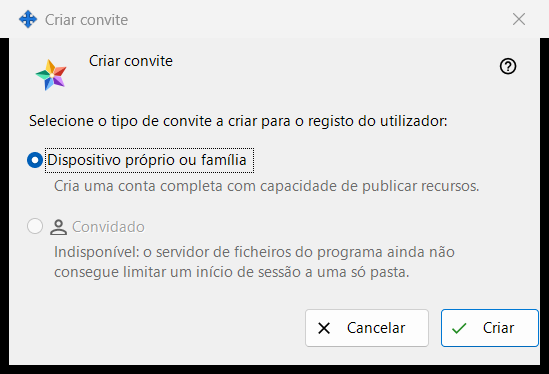
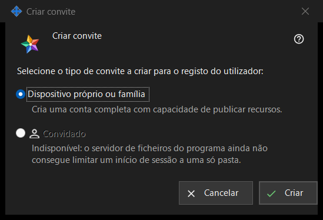

Criar convite
Finalidade
Esta pequena janela pergunta que tipo de conta o novo convite vai criar. Abre-se com «Criar convite..» no grupo «Convites» das definições do servidor de troca; o grupo é mostrado assim que o gestor chega ao servidor.


Nesta ordem
- Nas definições do servidor de troca, procure o grupo «Convites» e prima «Criar convite..».
- Deixe «Dispositivo próprio ou família» selecionado.
- Prima «Criar».
- A janela «Convite criado» abre-se e mostra o código uma só vez: copie-o aí. «Cancelar» ou Esc fecha a janela sem criar nada.
Os elementos
Tipo de convite
A pergunta «Selecione o tipo de convite a criar para o registo do utilizador:» oferece dois botões de opção. «Dispositivo próprio ou família» vem selecionado por predefinição, e a linha por baixo diz «Cria uma conta completa com capacidade de publicar recursos.» Quem usa o convite regista um nome de utilizador e uma palavra-passe próprios.
Criar
«Criar» pede ao servidor um convite de utilização única. Em caso de sucesso, a linha «Convite criado com sucesso.» aparece na página de definições e a janela com o código abre-se. Se o servidor recusar, o motivo aparece na página e a janela do código não se abre. A lista mostra cada convite pelo tipo, pela hora de criação, pelo estado e por um hash, nunca pelo código.
Retirar um convite
Para cancelar um convite já criado, selecione-o na lista e prima «Revogar». Depois de confirmar, o respetivo código deixa de funcionar.
Cancelar
«Cancelar» ou Esc fecha a janela e não cria nada.
Definições do gestor · Definições de partilha SFTP · Definições do servidor de troca